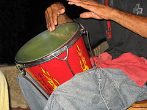
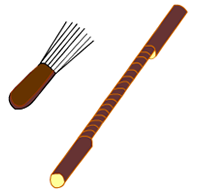

Instrumento de percusión de origen africano. Se trata de un tambor pequeño cuyo parche se fabricaba de buche de caimán, luego de piel de marimonda negra y, actualmente, de cuero de chivo, venado o carnero. El vaso se hace de un tronco de árbol hueco de 40 cm de alto y 30 cm de diámetro. El árbol debe ser de tronco fibroso como macurutú, cañaguate o matarratón.

GUACHARACA
Instrumento cóncavo de fricción autóctono de los indígenas colombianos de 40 cm de largo, elaborado con el tallo de la uvita de lata. Su nombre proviene de la ortalis columbiana o pava silvestre, ave de monte cuyo canto es similar al sonido que produce el instrumento.9 También se utiliza en su lugar el guache.

MENU